Systems built.
Problems solved.
A record of platforms, tools and integrations built across aviation, fintech, healthcare, Web3 and e-commerce.
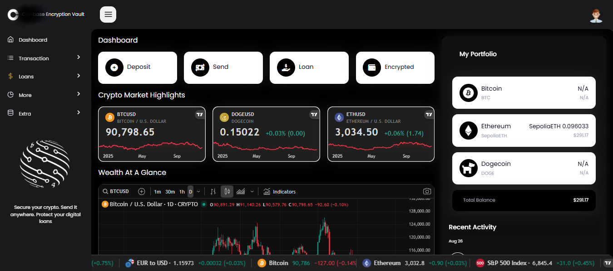
SERA is a web platform used by airlines to submit aviation incident reports wildlife strikes, operational risks, disasters and safety issues across the United States.

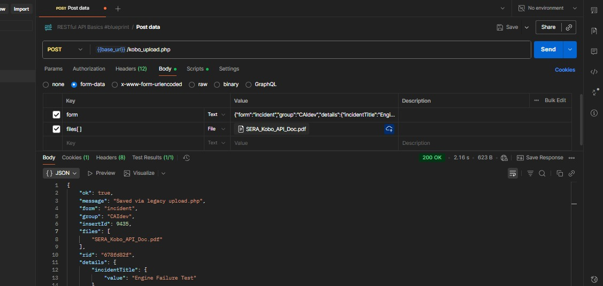
A custom API built for the SERA mobile app that stores form data into the database of a specific flight group and sends an automated email to that group's supervisor. Authenticates via JWT before any form data is accepted.
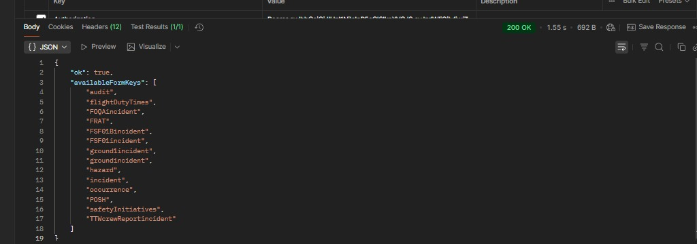
Form schemas returned by the API: structured, declarative definitions describing the layout, fields, validation rules and behavior of each digital form type used across airline groups.
- Implemented SP-Initiated SSO using Azure AD and AWS Cognito, enhancing authentication and authorization for CAI and CXI airline groups with secure session routing and multi-group access control.
- Developed RESTful KoboToolbox API integration to replace FormPA: storing submitted reports in the correct group database, downloading attachments and sending automated admin notifications.
- Built dynamic dashboards with JSON-based form schemas and group-specific buttons that update based on each airline's database, using JavaScript for interactive data rendering.
- Added automated email workflows, incident ingestion logic, data validation and multi-database operations in PHP and MySQL.
- Improved performance, data accuracy and reporting automation across all airline groups.
NightBright is a Laravel platform enabling donors and investors to support evangelist-led causes including feeding programs, church rebuilding and charity missions.
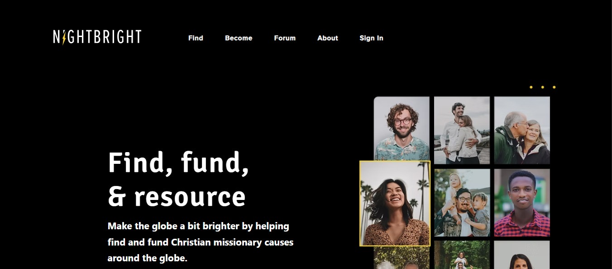
- Worked across a two-server architecture required to run the platform's donation and dashboard systems.
- Fixed UI and UX issues and implemented responsive design using HTML5 and CSS3 for both Evangelist and Donor dashboards.
- Repaired the profile picture upload system ensuring images save correctly across environments.
- Fixed and tested Stripe payment API integration using their test environment, ensuring reliable transaction workflows and proper error handling.
- Improved authentication by separating donor and evangelist signups and logins, and adding proper validation with error feedback.
- Corrected redirect logic for both dashboards to ensure users always land in the correct portal.
- Polished frontend layouts and optimized all pages for both mobile and large screens, enhancing performance and interactivity through JavaScript improvements.
Built a responsive solar installation website with a custom energy calculator that estimates system requirements and connects customers directly with the company through WhatsApp.
View live site ↗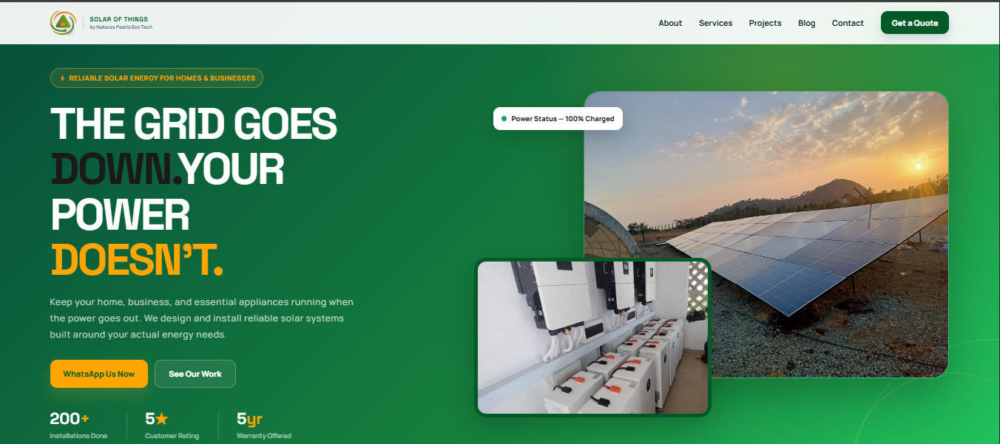
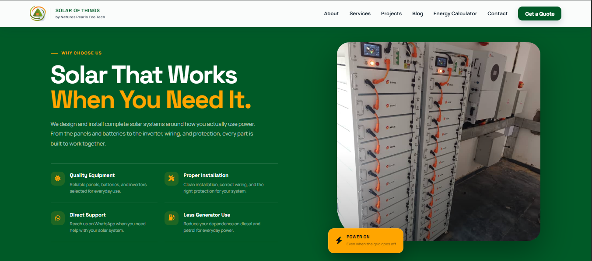
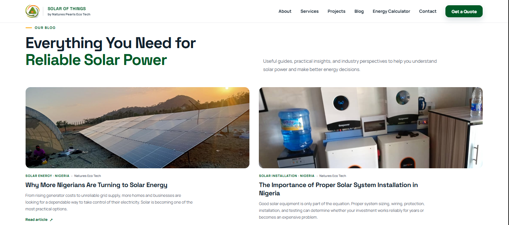
- Built the energy calculator in JavaScript to calculate daily energy consumption and peak load from appliance quantity, wattage, and daytime and nighttime usage.
- Added inverter, battery, and solar PV sizing calculations based on the customer's usage, location, system type, and installation profile.
- Built the package matching logic to compare the calculated requirements against the company's available solar packages and return the first package that meets the requirements.
- Added form validation to prevent incomplete appliance usage data from being used in the calculation.
- Added a custom-system result when a customer's requirements exceed the available package range instead of returning an unsuitable package.
- Built the WhatsApp integration to generate a pre-filled message containing the customer's details, energy requirements, and recommended package.
- Built the multi-stage calculator flow, including appliance selection, usage profile, customer details, analysis, and results.
- Developed the responsive website and frontend interactions using HTML5, CSS3, and JavaScript.
iHealth — Medical Data Extraction Pipeline
Feb 2024 – May 2024 · Volunteer · Remote · United StatesBuilt automated web scraping pipelines to extract, clean and normalize structured medical content from major health platforms including CDC, WHO, Mayo Clinic and WebMD, feeding iHealth's medical knowledge base.
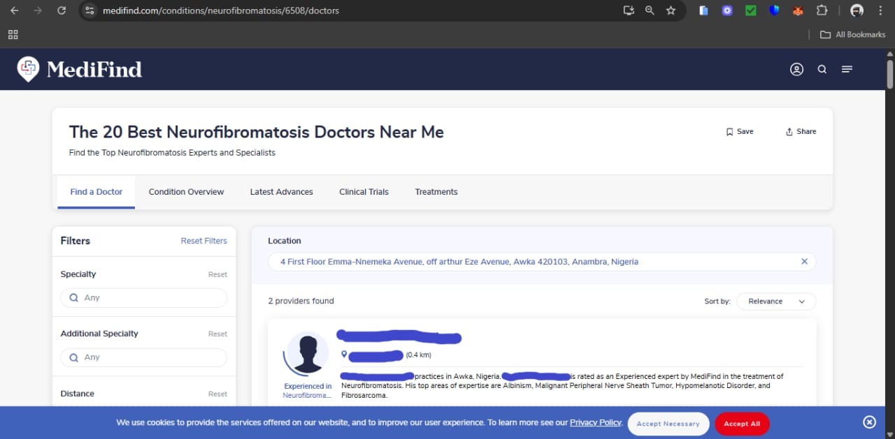
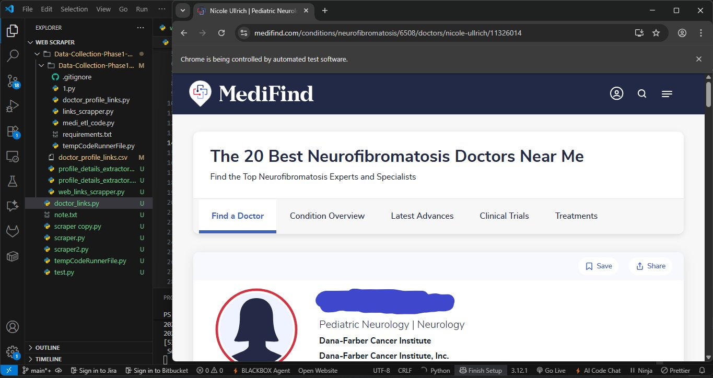
Selenium controlling Chrome to navigate and extract data from MediFind in real time. The VS Code workspace shows the multi-script pipeline including link scrapers, profile extractors and ETL scripts outputting to CSV.
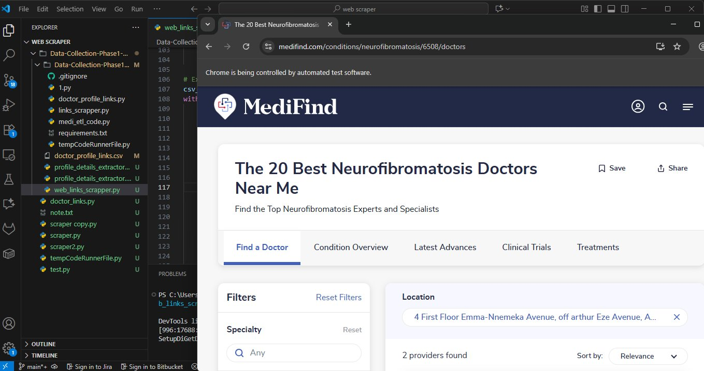
Individual doctor profile pages scraped for specialty, location, insurance, availability and expertise ratings. Data was normalized and structured for integration into iHealth's medical knowledge base.
- Extracted structured medical content from official health websites including CDC, WHO, Mayo Clinic and WebMD.
- Built automated scraping pipelines using BeautifulSoup, Selenium and Scrapy, handling dynamic page loading and anti-bot techniques.
- Normalized scraped data into clean, structured datasets ready for research and content integration.
- Identified and flagged broken medical references, duplicate entries and misinformation, improving the accuracy of iHealth's knowledge base.
Encryption Vault — Authentication & KYC Platform(Coinbase-Inspired)
Aug 2025 – Oct 2025 · Remote · United StatesA complete authentication and KYC verification system for a crypto-security platform that lets users borrow digital assets with no collateral, requiring robust identity checks.
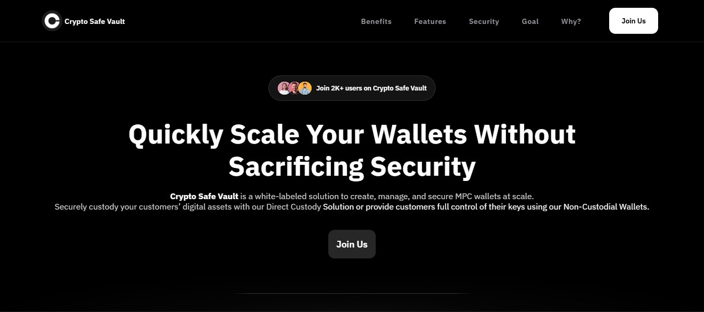
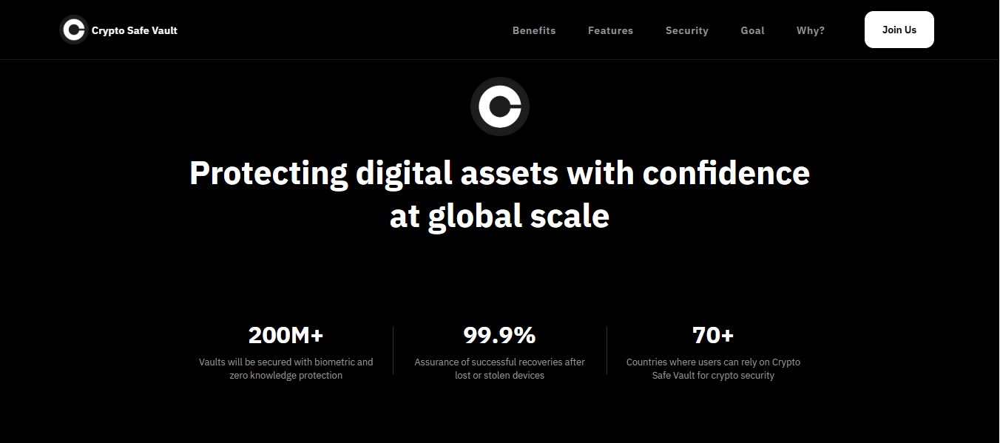
- Implemented secure signup and login with Argon2ID hashing, session regeneration and anti-double-submit protection.
- Integrated Twilio for email and SMS OTP verification including expired-code handling, resend limits and phone re-verification flows.
- Designed a full KYC submission workflow with status tracking (Submitted, Approved, Rejected) and responsive UI.
- Developed an admin dashboard for managing KYC queues, user lists and verification tools.
- Updated MySQL schema to support OTP codes, expiries, verify states and KYC records.
- Prepared the system for deployment on Render with Composer setup, .env configs, DB refactoring and SDK configuration.
SwiftBite — Food Delivery Platform
Founder & Full-Stack DeveloperSwiftBite is a startup platform connecting customers with local restaurants, home chefs, bakeries, drinks and smoothie vendors. Built to help customers discover food they love while giving local food businesses the reach they deserve to grow.
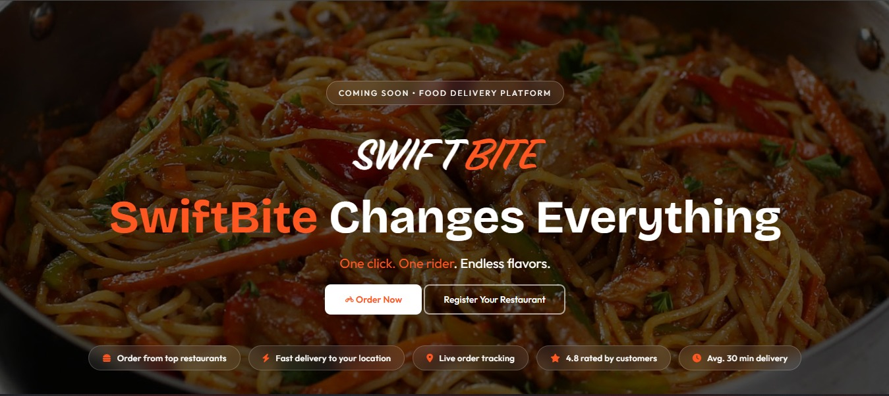
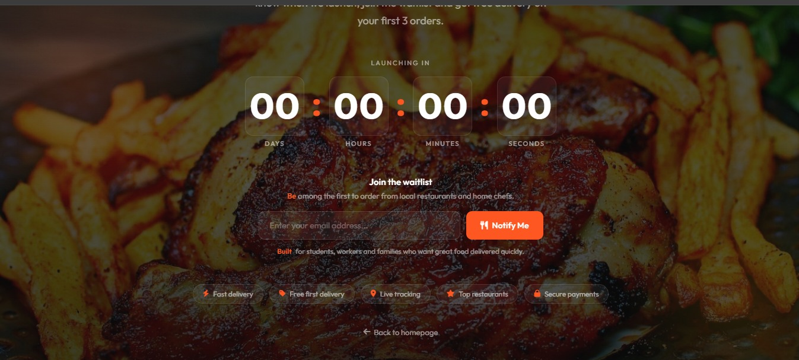
Launch page walkthrough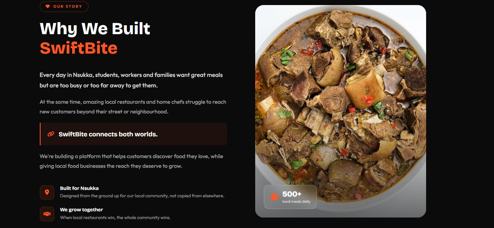
Waitlist page walkthroughA separate pre-launch page where anticipating users register their email to be notified when SwiftBite goes live. Features a live countdown timer and early-access sign-up form.
A dedicated page for restaurants and food sellers to register before launch — covering what SwiftBite is, why it was created and who it is built for.
- Built a launch page connecting customers with local restaurants, home chefs, bakeries and drinks vendors across the city.
- Developed a standalone pre-launch waitlist page with a live countdown timer and email sign-up form, capturing early users ahead of the platform going live.
- Built a separate restaurant and food seller registration page explaining the platform's purpose, target audience and value proposition to prospective partners.
- Delivered three distinct pages with a consistent brand identity: warm food photography, bold typography and a strong orange-on-dark visual language.
Sports Bet Kings
Founder & Full-Stack DeveloperA dynamic sports betting platform featuring live streaming, real-time betting and a full admin dashboard for managing games, user transactions and sports content.
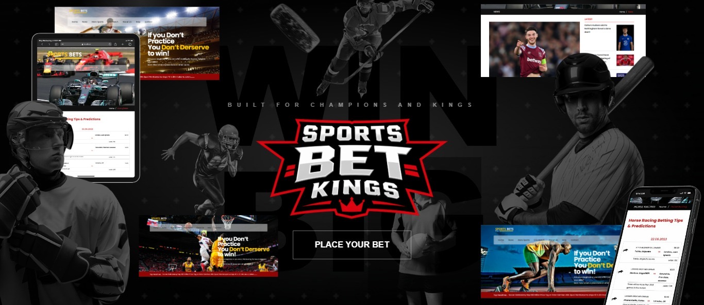
- Implemented live streaming features, allowing users to watch matches and sports games directly on the platform.
- Integrated real-time betting functionalities, ensuring seamless and quick updates for users placing bets.
- Created an intuitive admin dashboard using PHP, enabling admins to update website content, manage transactions and registered users, open and manage betting games, address customer complaints, stream live games and post sports news.
- Designed and built a fully responsive multi-page sports betting site optimized for desktop, tablet and mobile.
- Collaborated with frontend and backend teams to ensure a smooth and engaging user experience.
Smart Rental Deals
Feb 2023 – May 2023 · Remote · CanadaDesigned and developed a hotel and resort reservation platform increasing customer engagement by 30%.
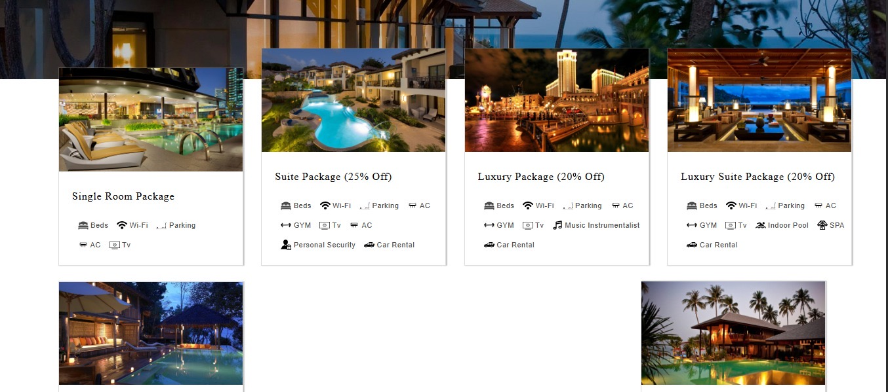
- Designed and developed responsive web pages for a hotel and resort reservation website, enhancing user experience and increasing customer engagement by 30%.
- Implemented a secure booking system with integrated payment gateways, ensuring smooth transactions and protecting user data.
- Developed backend APIs to manage property listings, reservations and user profiles using Node.js and Express.
- Collaborated with the marketing team to integrate SEO best practices, improving search engine rankings and driving organic traffic.
- Led the development of an investment portal providing users with real-time data and analytics tools to track their investments.
- Used PHP to design the admin dashboard, allowing admins to update website content, keep records of transactions and register users efficiently.
- Ensured cross-browser compatibility and responsiveness across various devices, maintaining a consistent user experience.
- Managed version control and deployment processes using Git and CI/CD pipelines, streamlining development workflows.
A full stack bus booking and transfers platform built as a final year project, featuring an interactive seat selection interface for passengers and a full admin panel for managing routes, drivers, buses, tickets and users in real time.
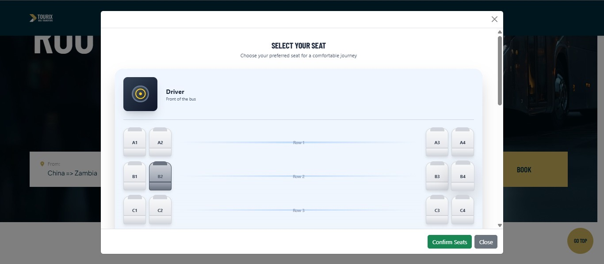
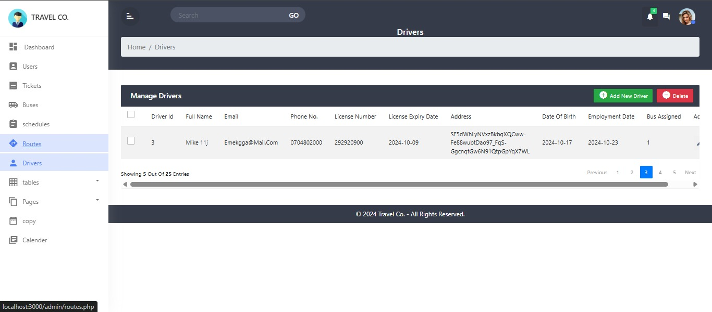
Admin panel: driver management. The admin can register new drivers, assign buses to them and view license details, contact info and employment records across all 25+ entries.
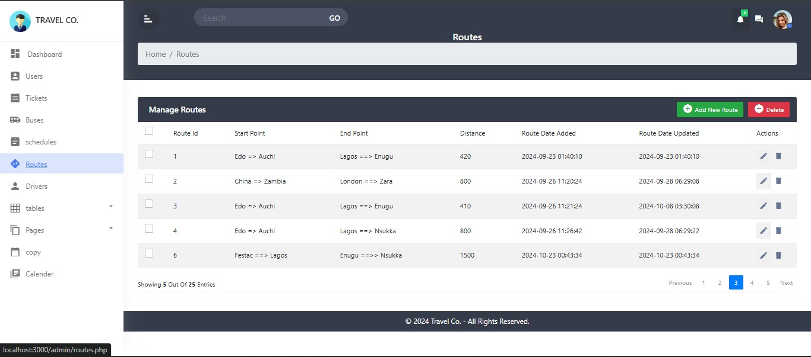
Admin panel: route management. The admin can create new routes with start points, end points and distances, and manage all destination terminals across the platform.
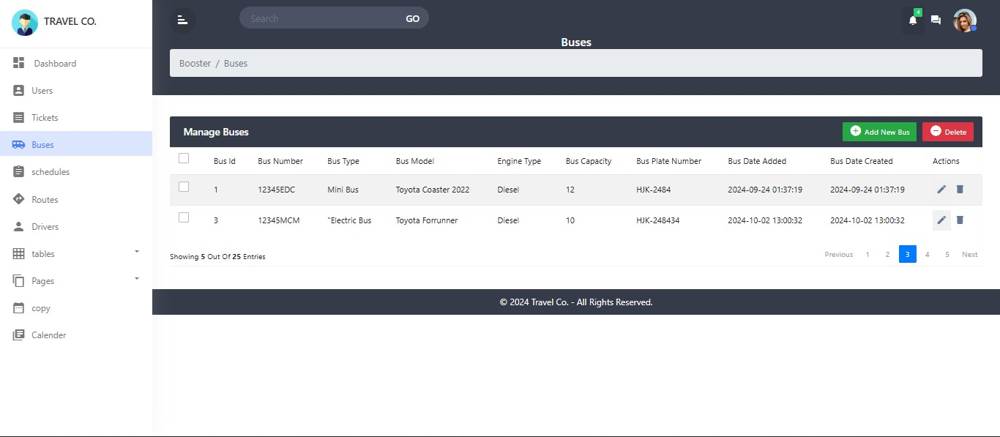
Admin panel: bus management. Tracks each bus by number, type, model, engine type, capacity and plate number, with full add and delete controls.
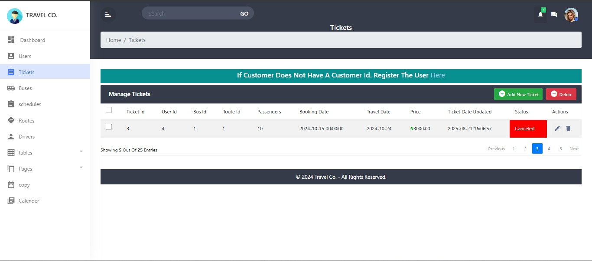
Admin panel: ticket management. Tracks bookings by user, bus, route, passenger count, travel date and price. The admin can register new travelers and monitor ticket status in real time.
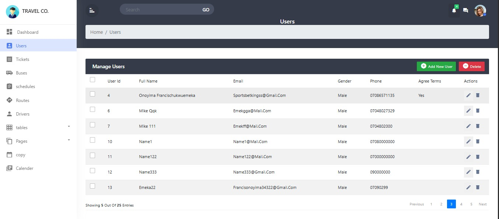
Admin panel: user management. Stores registered traveler profiles with contact details, gender and terms agreement status, with full CRUD controls.
- Built an interactive seat selection modal with a visual bus layout showing rows, seat availability and selected state for passengers booking journeys.
- Developed a full admin panel covering drivers, routes, buses, tickets and users, with paginated data tables and full CRUD controls across all modules.
- Implemented route and destination terminal management, allowing admins to add new routes with start points, end points and distances.
- Built a ticket management system tracking bookings by user, bus, route, passenger count, travel date, price and cancellation status.
- Added driver registration with license details, bus assignment and real-time tracking capability built into the admin dashboard.
- Designed a clean, accessible UI for both the passenger-facing booking flow and the admin portal.
Seasonal Web Experiences
December 2025 · Remote · Multiple International ClientsStandalone seasonal landing pages built for high-conversion moments, including a Christmas campaign page and a New Year 2026 gift ordering experience.
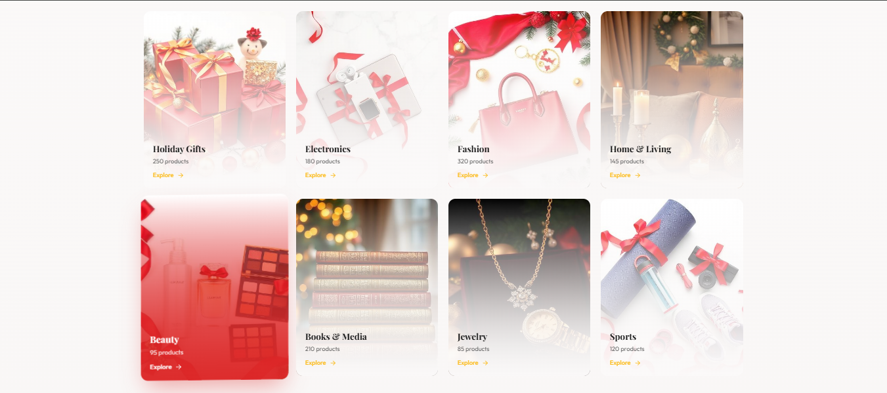
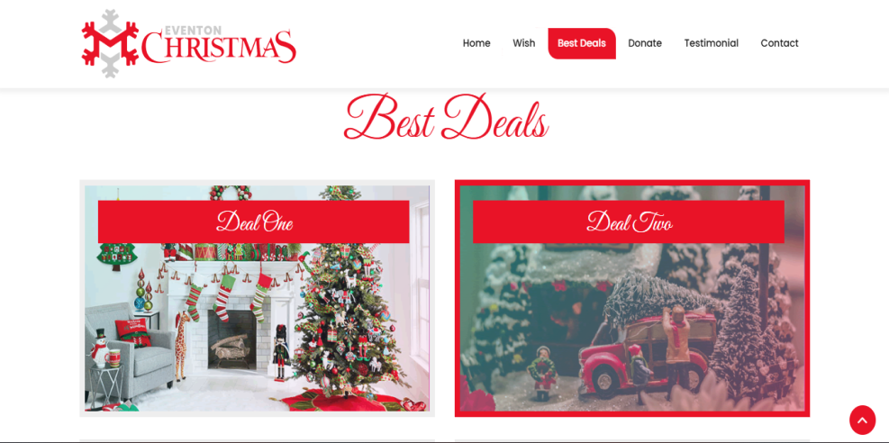
- Designed festive landing pages with strong seasonal visual identity and clear conversion paths.
- Built a gift ordering interface with product browsing and a New Year 2026 promotional theme.
Quiz to Cash — Crypto Rewards Platform
Founder & Full-Stack DeveloperQuiz to Cash is a survey and engagement platform that rewards users with cryptocurrency for watching video ads, playing prediction games, completing surveys, participating in promotions and entering lotteries.


Earn modules covering surveys, ads engagement, offers, game predictions, special giveaways and referrals. Each module links out to a detailed earn flow.

Two-step onboarding: users create an account then connect their crypto wallet. The sign-up form includes first name, last name, email, password and confirmation with alphanumeric validation.
- Built the complete frontend for a crypto rewards platform covering homepage, earn modules, auth flow and wallet connection.
- Designed the earn system UI covering six modules: surveys, ads engagement, offers, special giveaways, game predictions and referrals.
- Implemented a two-step onboarding flow with account creation and crypto wallet connection.
- Delivered a dark-themed, responsive interface consistent with the platform's crypto-native brand identity.
PBM Gears — Apparel E-Commerce Platform
Feb 2024 – May 2024 · Remote · AustriaA full-stack e-commerce web application for a streetwear brand specialising in caps, hoodies and t-shirts, covering the complete shopping experience from catalogue browsing to order confirmation.

- Built a full-stack e-commerce platform using React and Tailwind CSS on the frontend, with a Node.js and Express backend connected to MongoDB.
- Developed a product catalogue with category, size and color filtering, individual product pages with image galleries, size guides and add-to-cart functionality.
- Implemented a shopping cart with quantity controls, item removal and subtotal review before checkout.
- Built a multi-step checkout flow covering shipping details, order summary and Stripe payment processing, designed to reduce drop-off at point of purchase.
- Used Context API for lightweight cart state management across the application.
- Delivered an order confirmation page displaying order ID and receipt summary on successful payment.
Flash Loan Arbitrage Contracts
Personal ProjectFlash loan smart contracts that take advantage of price differences between two exchanges — borrowing from the lower-priced exchange and selling on the higher-priced one, all completed in seconds within a single on-chain transaction.
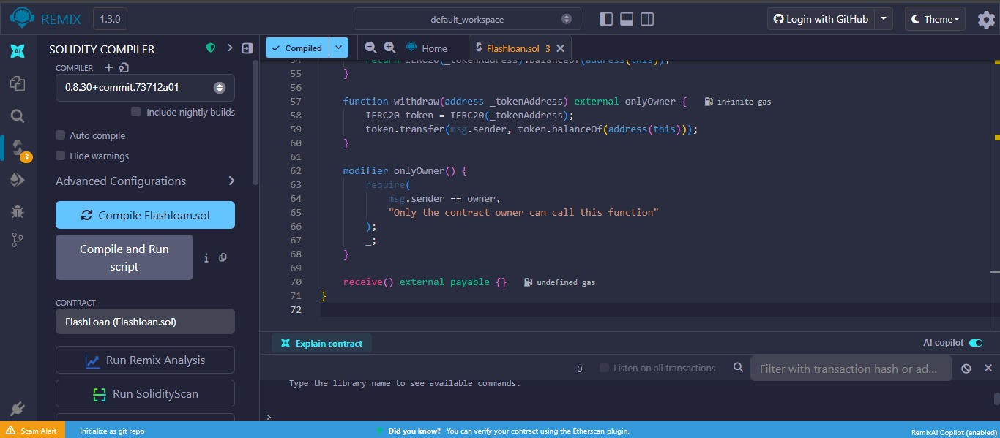
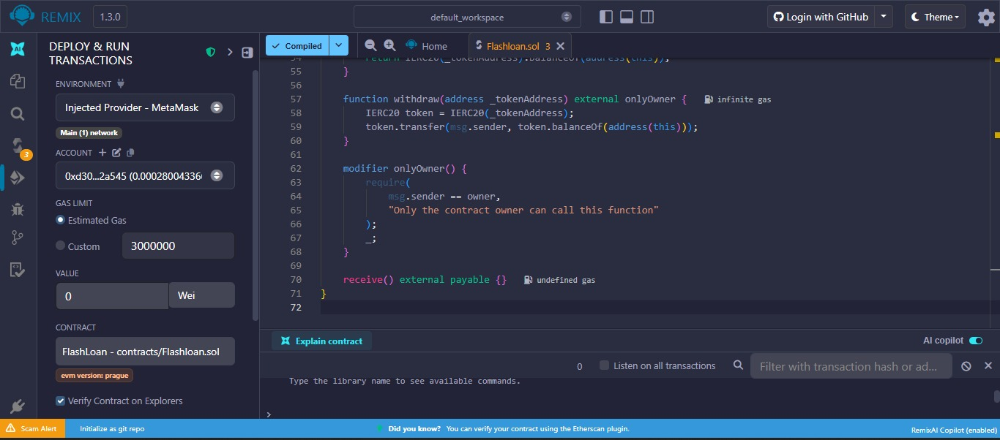
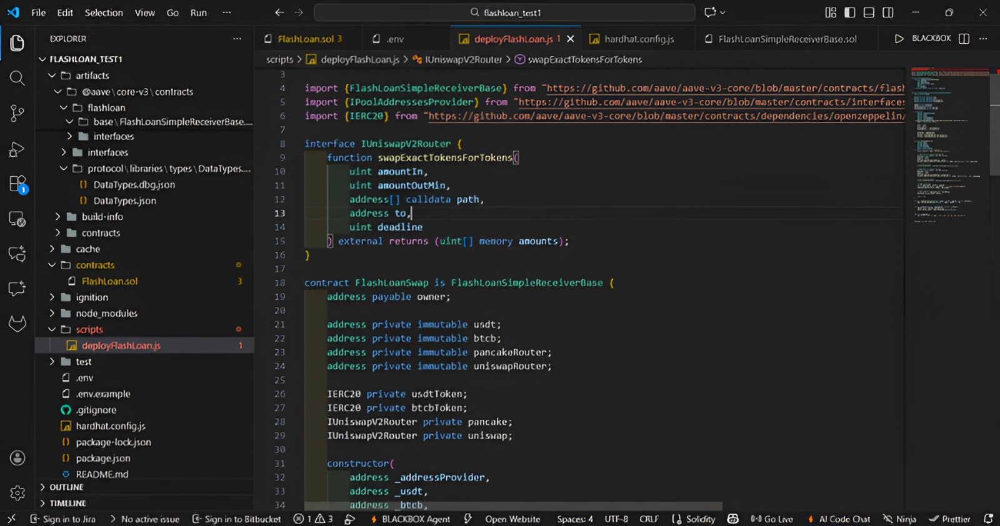
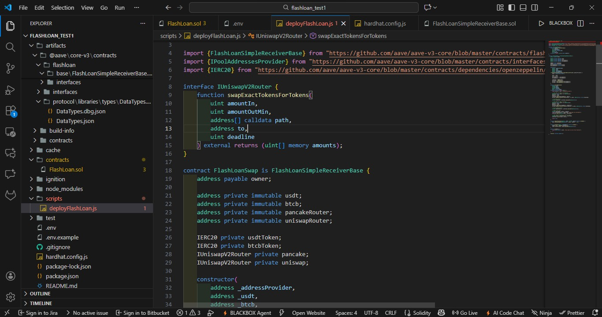
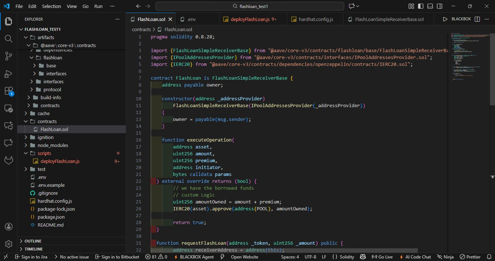
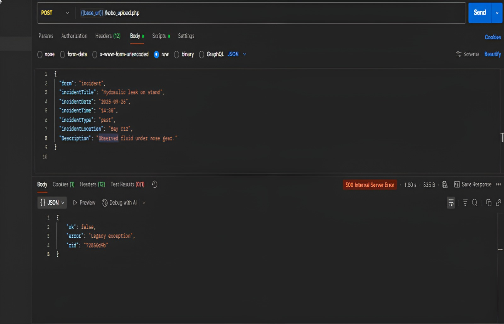
- Built smart contracts to execute instant arbitrage trades across DEXs with zero capital risk using flash loans.
- Detects price discrepancies between exchanges and executes borrow-buy-sell-repay sequence atomically.
- Ensured cost-efficiency through gas optimization and transaction simulation via Tenderly.
- Achieved atomic execution — profit or full revert — within a single on-chain transaction.
Stocks and Bonds Capital
Nov 2024 – Mar 2025 · Remote · Toronto, CanadaA full trading platform where users buy, swap and manage stocks and bonds using crypto payments, with account tiers and a complete admin panel.
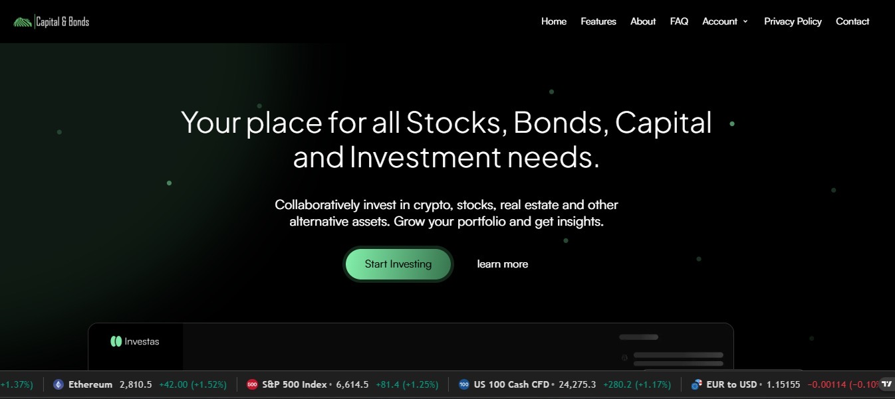
- Built the frontend using HTML, CSS and JavaScript, and built the backend in PHP with a MySQL database.
- Implemented account tiers (Basic, Standard, Premium) with upgrade logic tied to user permissions and features.
- Added a Blackcard system allowing users to withdraw earnings from purchased stocks.
- Integrated automated stock and cryptocurrency price updates using external APIs.
- Developed a full admin panel to manage users, transactions, card requests, payments and account levels.
- Implemented secure crypto deposit handling and balance updates for user trading accounts.
- Optimized UI/UX across the platform and ensured responsive layouts for both desktop and mobile users.
Token and NFT Launch Automation Platform
Apr 2025 – Jun 2025 · Remote · United KingdomBackend logic and smart contract infrastructure to deploy ERC-20 and ERC-721 tokens and automate presale processes.
- Developed backend logic to deploy ERC-20 and ERC-721 contracts and automate presale processes via Web3.js and Solidity.
- Designed the system to track wallet contributions and handle auto-whitelisting using smart contracts.
- Built secure user authentication using MetaMask and JWTs for wallet-bound login sessions.
University of Dundee — Laser Surgery GUI
Jul 2024 – Oct 2024 · Remote · ScotlandDesigned and developed a Python GUI for a hospital application used in laser eye surgery procedures, requiring precise scientific calculations and seamless integration with the hospital's existing software infrastructure.
- Created algorithms for calculating laser geometry, eye hazard distance, skin hazard and laser wavelength.
- Implemented complex calculations involving watts, joules, milliwatts and meters per second.
- Developed both frontend and backend components of the GUI using Python.
- Integrated the GUI into the hospital's existing software infrastructure for seamless operation.
- Collaborated with medical professionals to ensure all calculations met clinical requirements.
- Conducted extensive testing to validate accuracy and reliability for live medical use.
SwiftStack Stocks
Jan 2024 – Feb 2025 · Remote · United KingdomDeveloped and maintained the user interface for a UK-based stocks trading platform, working with designers and backend developers to deliver responsive, engaging experiences for traders and investors.
- Utilized React.js to create dynamic and interactive components, ensuring a smooth and engaging user experience.
- Redesigned registration and login forms, improving usability and reducing user drop-off rates by 20%.
- Optimized website performance and speed, resulting in a 30% increase in page load times and overall user satisfaction.
- Integrated third-party APIs to provide real-time stock data and market updates, keeping users informed and engaged.
- Conducted regular usability testing and gathered feedback to continuously improve functionality and user experience.
- Provided technical support and troubleshooting for frontend-related issues, ensuring a smooth and error-free user experience.